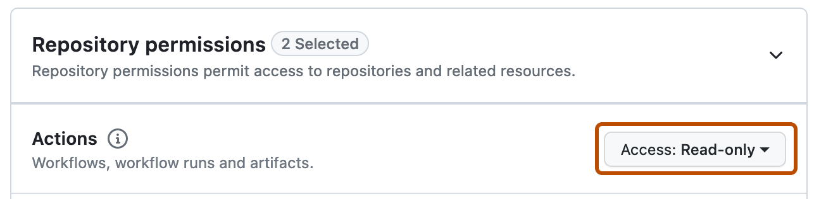
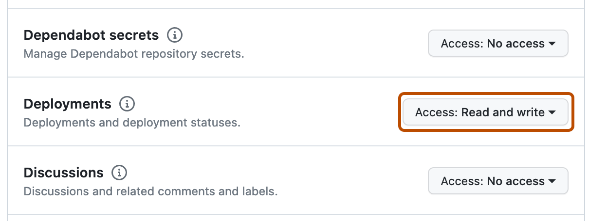
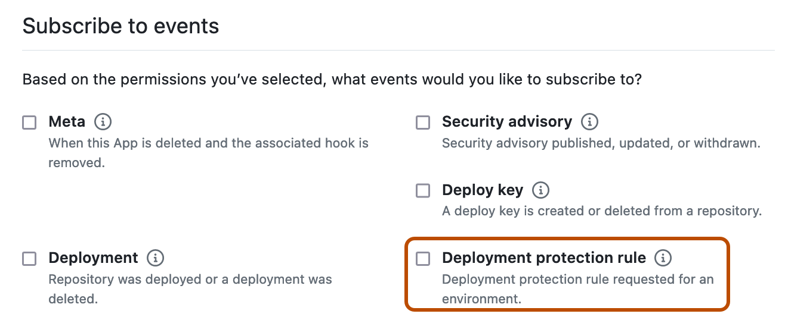

Use GitHub Apps to automate protecting deployments with third-party systems.
Note
Custom deployment protection rules are currently in public preview and subject to change.
For general information about deployment protection rules, see Deploying with GitHub Actions.
Create a GitHub App. For more information, see Registering a GitHub App. Configure the GitHub App as follows.



Install the custom deployment protection rule in your repositories and enable it for use. For more information, see Configuring custom deployment protection rules.
Once a workflow reaches a job that references an environment that has the custom deployment protection rule enabled, GitHub sends a POST request to a URL you configure containing the deployment_protection_rule payload. You can write your deployment protection rule to automatically send REST API requests that approve or reject the deployment based on the deployment_protection_rule payload. Configure your REST API requests as follows.
Custom deployment protection rules are not compatible when a workflow job's environment is set to deployment: false. For more information, see Deploying with GitHub Actions.
Validate the incoming POST request. For more information, see Validating webhook deliveries.
Use a JSON Web Token to authenticate as a GitHub App. For more information, see Authenticating as a GitHub App.
Using the installation ID from the deployment_protection_rule webhook payload, generate an install token. For more information, see About authentication with a GitHub App.
curl --request POST \
--url "https://api.github.com/app/installations/INSTALLATION_ID/ACCESS_TOKENS" \
--header "Accept: application/vnd.github+json" \
--header "Authorization: Bearer {jwt}" \
--header "Content-Type: application/json" \
--data \
'{ \
"repository_ids": [321], \
"permissions": { \
"deployments": "write" \
} \
}'
Optionally, to add a status report without taking any other action to GitHub, send a POST request to /repos/OWNER/REPO/actions/runs/RUN_ID/deployment_protection_rule. In the request body, omit the state. For more information, see REST API endpoints for workflow runs. You can post a status report on the same deployment up to 10 times. Status reports support Markdown formatting and can be up to 1024 characters long.
To approve or reject a request, send a POST request to /repos/OWNER/REPO/actions/runs/RUN_ID/deployment_protection_rule. In the request body, set the state property to either approved or rejected. For more information, see REST API endpoints for workflow runs.
Optionally, request the status of an approval for a workflow run by sending a GET request to /repos/OWNER/REPOSITORY_ID/actions/runs/RUN_ID/approvals. For more information, see REST API endpoints for workflow runs.
Optionally, review the deployment on GitHub. For more information, see Reviewing deployments.
You can publish your GitHub App to the GitHub Marketplace to allow developers to discover suitable protection rules and install it across their GitHub repositories. Or you can browse existing custom deployment protection rules to suit your needs. For more information, see About GitHub Marketplace for apps and Listing an app on GitHub Marketplace.